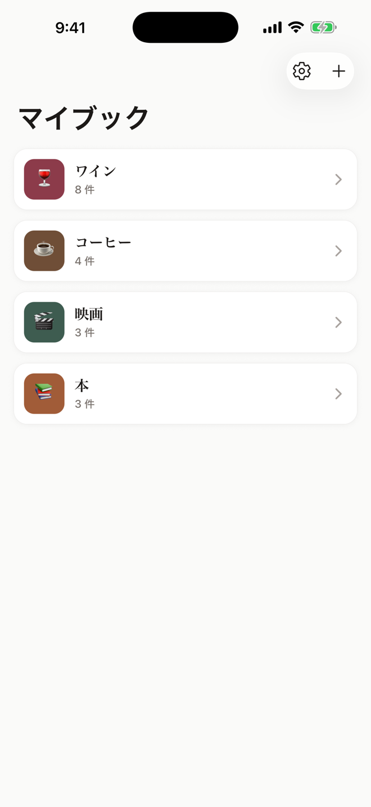

コスメ・香水
コスメ・香水の記録アプリ
リピートしたいか、肌に合ったか、香りは何時間もったか。自分の基準で残すコスメノートです。
App Store で入手（無料）記録できること
- 総合評価
- ブランド
- リピートしたい
- 肌との相性
- 持続時間
- 価格
評価軸は自由に足したり減らしたりできます。テンプレートから始めれば最初の 1 冊はすぐ。
レビューブックを選ぶ理由
- 非公開・アカウント不要
- 投稿も公開もしません。登録なしで、記録は iPhone の中だけに保存されます。
- 自分だけの評価軸
- 星・コメント・写真に加えて、スライダー・選択肢・タグ・日付・数値を自由に組み合わせられます。
- 今月・今年で絞ったランキング
- 「どっちが好き？」の 2 択で順位が決まり、期間で絞ればその期間だけの順位を数え直します。
- BEST 5 を画像で書き出し
- ランキングをそのまま 1 枚の画像に。

よくある質問
LIPS のような口コミアプリとは違いますか？
違います。レビューブックは人の口コミを見るためではなく、自分の記録を残すためのアプリです。公開されず、アカウントも不要です。
使い切った・手放したものも残せますか？
はい。「使い切った」のような選択肢の評価軸を作れば、後から絞り込んで振り返れます。